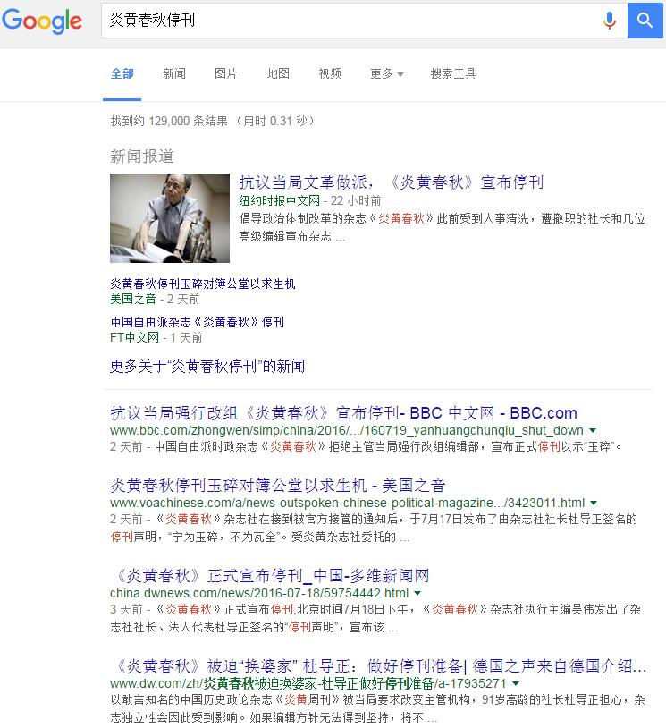
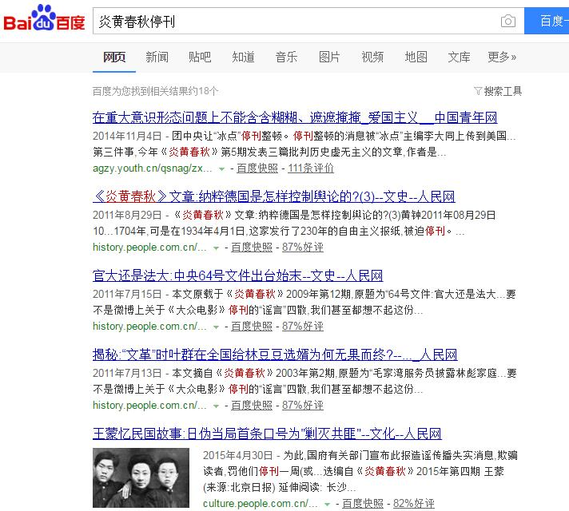

我的微博被禁言、朋友圈被屏蔽的情况说明
by 长沙杨飞
2016年7月18日晚我发了一条微博，没有一个字，只是分享一张图片，然而此微博半小时之后就被管理员禁止转发（随后被删）。接着我就被禁言，无法发布、回帖和互粉。
到7月20日晚，我的微博依然无法使用，于是我发了一条微信朋友圈，全文如下：
“各位朋友，我的微博已被禁言，不能发布、回复和互粉。新浪称我违反了微博社区规则。鄙人正在和新浪小秘书交涉，争取早日恢复正常。我仔细翻看，可能是因为一张图片。这张图是我发的最后一条微博。此图如此敏感，出乎我的意料之外”。
这条朋友圈并附上了这张图片。奇怪的是，发出两个小时之后，没有一个赞也没有任何留言。经过和几位微信好友截图沟通，确认我这条朋友圈已被管理员屏蔽，只有我自己能看到，朋友们都看不到。
经过朋友们的反复验证，我们最后确认：不论是微信还是微博，只要内容包含有这张图片，或者包含有“炎黄春秋停刊”这几个字，均会被屏蔽或删除。
也许你要问，什么图片这么敏感，遭至这么严厉的封杀？其实也没啥，就是下面这张，《炎黄春秋》停刊声明：
对“炎黄春秋”事件的消息管制我感觉是空前绝后的严厉（也可能不会绝后吧）。著名杂志被迫停刊，同行理应唇亡齿寒，但中国所有的媒体都对此事保持沉默，没有任何报导。微博和微信等个人社交工具也
被严格审查，连图片识别技术都用上了，发布消息者一律屏蔽、销号或禁言。除了抓人，这应该是最严厉的言论管控手段了。
除此之外，中国政府还对搜索引擎进行了严格管制。截图举个例：

2016年7月21日谷歌搜索“炎黄春秋停刊”
谷歌搜索有129,000条结果。不难看到，虽然国内鸦雀无声，但《炎黄春秋》停刊事件在海外中文媒体上都炸了锅了。

相比谷歌的十几万条结果，百度搜索总共只有18个结果，而且没有一个和该杂志停刊有关系。这不用我解释了吧。
某杂志停刊发一个公告，并不是什么大事，为什么政府此次如临大敌呢？鄙人愚见，原因有二。一是《炎黄春秋》这本杂志有点特殊。创刊25年以来，这本杂志一直被视为中国共产党内部改革派最重要的理论阵地，订户近二十万，有全国性影响。该刊曾发文深挖中共历史上的错误，也曾连续发文肯定前总理赵紫阳的贡献。该杂志的前副社长杨继绳还出版有《墓碑》一书，对1959-1961年饿死三千万人的事件进行了详细报道和深入论证（这本书2008年在香港出版，随即被大陆官方列为禁书）。可以这么说，炎黄春秋这个摊子对当权派来说如鲠在喉，须除之而后快。
《炎黄春秋》当然也不是吃干饭的，它的法人代表杜导正是全国人大代表、前《光明日报》总编，并曾任新闻出版署署长。老一辈革命家习仲勋曾经给炎黄春秋题有八个大字：炎黄春秋，办得不错。虽然如此，这本杂志还是被迫停刊了。由此看来，在激烈的党内路线斗争之后，保守派已经全面获胜。他们并可借此警告全国媒体：若敢再不听指挥，胡言乱语，尚方宝剑也保不了你。

炎黄春秋办得不错。此图来源网络
第二，杂志突然宣布被迫停刊，这种方式相当惨烈。海外媒体对此的评论是：宁为玉碎，不为瓦全。对于政府最后采取强行进入的流氓手段，亦有媒体形容为“图穷匕见”。《炎黄春秋》是7月17日宣布停刊的，7月19日，杜导正接受海外媒体电话采访时说：“我抗议，我愤怒。。。我作为一个老干部、老共产党员，实在觉得没有办法理喻。这么像文化大革命的搞法，难道我们共产党又开始搞文化大革命了吗？”
杜导正说，“1966年文化大革命时，我正在办公室里就来了造反派，宣布你是走资派，你是反革命，你的权已经被我们夺了，请你离开这个地方。。。整个报社被他们占领了。这次给我的感觉有点那个味道。”
鄙人观点，杜导正接受采访说话还是很克制的。按文化大革命那搞法，人家红卫兵占领报社，那是明火执仗。这次炎黄春秋被强行占领，随后消息被严格封锁，性质当属暗杀。所谓暗杀，就是说我干掉你，但我不会让人知道。
暗杀作为一种非正常手段，不到万不得已谁也不会出此下策。原因很简单，一旦败露，可能满盘皆输。古今中外这种案例很多。近的来说，1946年7月闻一多被国民党特务暗杀，没多久国民党就树倒猢狲散，教训实属深刻。这次炎黄春秋之死，消息被全面封杀，我的微博和微信不幸中枪，鄙人对此表示理解，特汇报给诸位朋友。
杨飞，
2016/7/22，长沙
PS，1，经和新浪小秘书多方沟通，昨晚我的微博已解禁，感谢政府宽大处理。2，鉴于目前的形势，本文限朋友们自己参考，转发可能会让您的账号被禁言或销号，责任自负。
关注老杨
杨飞作品集：www.midphoto.com
微信：yangfei789288
微信公众号：老杨书吧
新浪微博@长沙杨飞
推特Twitter@feiyang17
Facebook：yangfei999999@hotmail.com